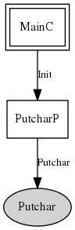

This component provides a TinyOS-compatible bridge to the system-specific mechanism of providing single-character output to the environment's printf(3c) infrastructure. Components that provide a libc-based printf facility in TinyOS should implement the Putchar interface and connect it to this module.
